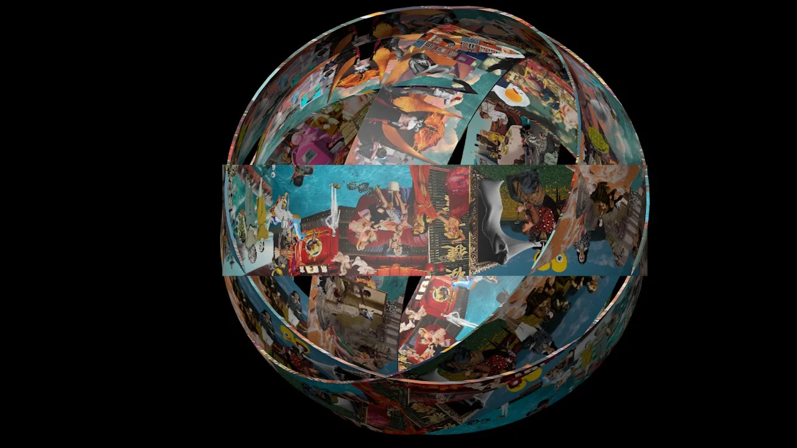
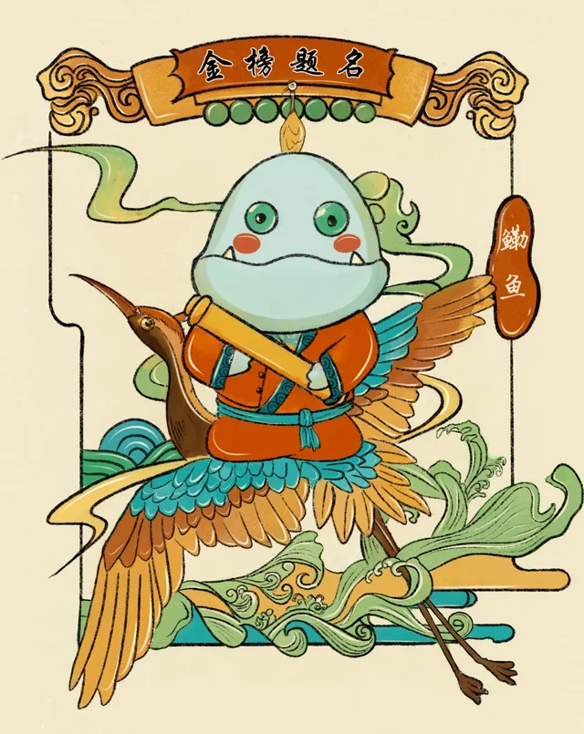
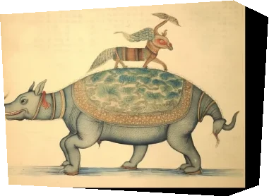

数字艺术创作者 / DIGITAL ARTIST个人艺术空间 · VOL. 01
CHANGRUI.常睿
✳
在传统与未来之间，
给想象留一个位置。

欲望之镜 ↗a little poetry.
马远的意境诗篇 ↗
观海赞 ↗
生物炼金术 ↗ what ifart could dream? 碎片相遇的地方，故事开始。
FIELD NOTES / 001—003
拼贴习作 / 2026异想，周而复始。
01 / SELECTED WORKS一些作品，
一些作品，
一些未完的想象✳
图像会流动，故事会延伸。
请慢一点看。
KEEP THE PICTURE MOVING让画面
让画面
继续发生。
水的起伏、身体的回声、年画的新表情。
在原始动态里，发现静帧以外的细节。
10 GIF ＋ 4 VIDEO ＋ 1 SOUND
02 / THE WHOLE COLLECTION
项目持续生长中还有这些↗
03 / THE PERSON BEHIND你好，
你好，
我是常睿。
CURIOUS
BY NATURE.保持好奇
BY NATURE.保持好奇
我用数字艺术，
寻找传统文化与未来想象
相遇的可能。